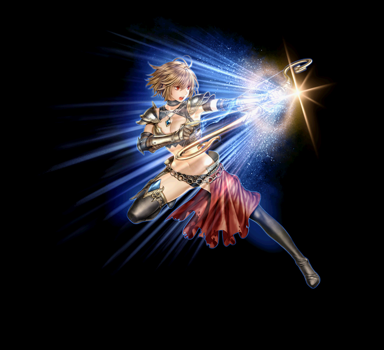
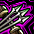
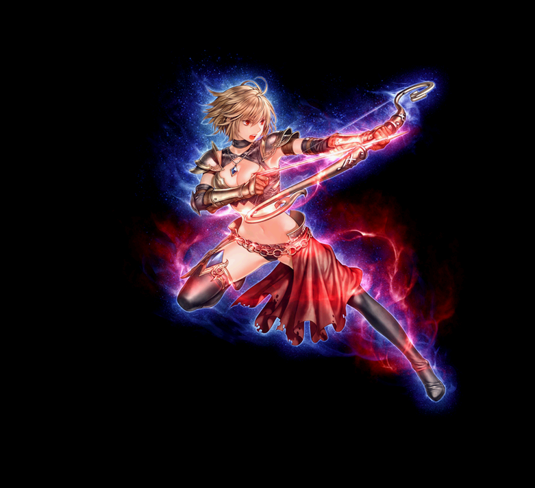
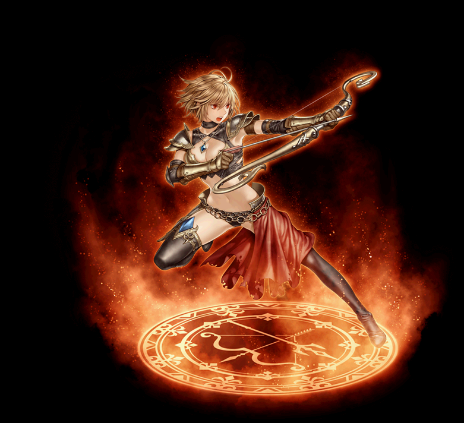
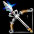

2020/2～ アーチャー 覚醒スキル一覧
2020/02/19 状態異常に伴うスキル改変後のデータ。
改変後は、2021バランスパッチ反映版を参考にしてください。
シャープシューター
アケインスナイパー
ローチングアンブッシャ
シャープシューター
| シャープシューター | |||||||
|---|---|---|---|---|---|---|---|
|  | |||||||
| [専用パッシブ] クイックリローデット | |||||||
|  | スキル説明 |
矢を迅速に装填する。自分の攻撃速度増加。 |
|||||
| スキル効果 |
自身の攻撃速度が20％だけ上昇 |
||||||
| [専用覚醒スキル] インターバルボマー | ||||||||
|---|---|---|---|---|---|---|---|---|
| スキル難易度 | 3 | |||||||
| 必要スキル | インターバルシューター[50] |
|||||||
| スキル説明 | 上空に向けて数発の矢を射る。矢は行動直後、攻撃を与える敵に攻撃と同時に落ち、3回までの攻撃では自動的にインターバルシューターが発射される。時間が経過すると、失敗した矢は消えてしまう。 | |||||||
| レベル | 0 | 1 | 2 | 3 | 4 | 5 | ... | 50 |
| 消費CP | 105 | 106.5 | 108 | 109.5 | 111 | 112.5 | ... | 180 |
| 獲得CP | 100 | 102 | 104 | 106 | 108 | 110 | ... | 200 |
| 物理ダメージ | 125% | 127.5% | 130% | 132.5% | 135% | 137.5% | ... | 250% |
| 命中率補正値 | 7.5% | 7.65% | 7.8% | 7.95% | 8.1% | 8.25% | ... | 15% |
| 持続時間 | 60 | 61 | 62 | 63 | 64 | 65 | ... | 110 |
| 矢数 | 7 | |||||||
| 1発当たり攻撃速度 | 0.25秒 | |||||||
| 備考 | 1回使用時3回連続して発動する。 | |||||||
 |
シーカーミサイル | |||||||
|---|---|---|---|---|---|---|---|---|
| スキル難易度 | 2 | |||||||
| 必要スキル | シーカーアロー[50] |
|||||||
| スキル説明 | 敵を追いかける誘導矢を放ち、命中するとクリティカルダメージが一定確率で発生する。敵にロックオンした矢は敵に当たったり、死んだりするまで追いかける。致命打確率が少し上昇し、自分のレベルによって追加攻撃力が上昇する。 | |||||||
| レベル | 0 | 1 | 2 | 3 | 4 | 5 | ... | 50 |
| 消費CP | 40 | 40.5 | 41 | 41.5 | 42 | 42.5 | ... | 65 |
| 獲得CP | 40 | 40.8 | 41.6 | 42.4 | 43.2 | 44 | ... | 80 |
| 物理ダメージ | 110% | 112% | 114% | 116% | 118% | 120% | ... | 210% |
| 命中率 | 100% | |||||||
| クリティカル確率 | 5% | |||||||
| 備考 | 自分のレベルに比例した攻撃力 [Lv×2]追加 | |||||||
 |
シャドウチェイサー | |||||||
|---|---|---|---|---|---|---|---|---|
| スキル難易度 | 5 | |||||||
| 必要スキル | テイルチェイサー[50] |
|||||||
| スキル説明 | 他のアーチャー技術で敵を攻撃する時にそれが命中すると、数発の矢が自動で発射され、数倍の威力でダメージを与える。発射された矢は同じ場所に命中し、強い衝撃を与える。 | |||||||
| レベル | 0 | 1 | 2 | 3 | 4 | 5 | ... | 50 |
| 消費CP | 200 | 203 | 206 | 209 | 212 | 215 | ... | 350 |
| 獲得CP | 100 | 102 | 104 | 106 | 108 | 110 | ... | 200 |
| 物理攻撃力 | 本あたりその直前ダメージの85％ | |||||||
| 命中率 | 100% | |||||||
| 発動確率 | 95% | 96% | 97% | 98% | 99% | 100% | ... | 100% |
| 攻撃回数 | 11 | 11 | 11 | 12 | 12 | 12 | ... | 12 |
アケインスナイパー
| アケインスナイパー | |||||||
|---|---|---|---|---|---|---|---|
|  | |||||||
| [専用パッシブ] インテリジェンスバースト | |||||||
| スキル説明 | 学習速度が速くなる。自分のレベルによって知識が増加。 | ||||||
| スキル効果 | キャラクターレベル2ごとに知識数値1増加 | ||||||
| [専用覚醒スキル] グライディングブレイズ | ||||||||
|---|---|---|---|---|---|---|---|---|
| スキル難易度 | 4 | |||||||
| 必要スキル | グライディングファイアー[50] |
|||||||
| スキル説明 | 火の魔力を込めた矢を垂直に射る事で火矢になって敵に降り注ぐ。発射された場所の中心に矢のトーテムが発生し、エリア内で自分の魔法攻撃力が増加し、敵の火抵抗力は減少する。 | |||||||
| レベル | 0 | 1 | 2 | 3 | 4 | 5 | ... | 50 |
| 消費CP | 210 | 213 | 216 | 219 | 222 | 225 | ... | 360 |
| 獲得CP | 0 | |||||||
| 火属性攻撃力 | 195〜215 | 199〜219 | 202〜222 | 206〜226 | 209〜229 | 213〜233 | ... | 370～390 |
| 爆発範囲半径 | 3m | |||||||
| 攻撃持続時間 | 4秒4回 | |||||||
| 敵火抵抗弱化 | 25% | |||||||
| 強化/弱化持続時間 | 30秒 | |||||||
| 魔法攻撃力を強化 | 25% | |||||||
| トーテム更新間隔 | 5秒 | |||||||
| トーテム設置可能数 | 3個 | |||||||
| トーテム持続時間 | 30秒 | |||||||
| 備考 | トーテム内で敵の抵抗弱化/味方の魔法攻撃力増加 | |||||||
| リワインドマーカー | ||||||||
|---|---|---|---|---|---|---|---|---|
| スキル難易度 | 4 | |||||||
| 必要スキル | ランドマーカー [50] |
|||||||
| スキル説明 | 数発の矢に魔力を込めて前方に一斉発射する。一直線に弾着点が形成され、さらに矢が戻ってくるように撃つ。矢が刺さった地面は爆発して周囲の敵にもダメージを与える。 | |||||||
| レベル | 0 | 1 | 2 | 3 | 4 | 5 | ... | 50 |
| 消費CP | 220 | 223 | 226 | 229 | 232 | 235 | ... | 370 |
| 獲得CP | 175 | 178.5 | 182 | 185.5 | 189 | 192.5 | ... | 350 |
| 物理ダメージ | 150% | 153% | 156% | 159% | 162% | 165% | ... | 300% |
| 火属性攻撃力 | 155〜165 | 158〜168 | 161〜171 | 164〜174 | 167〜177 | 170〜180 | ... | 305～315 |
| 射程距離(m) | 4.5 | 4.53 | 4.56 | 4.59 | 4.62 | 4.65 | ... | 6 |
| 爆破数 | 8 | 8 | 8 | 8 | 8 | 8 | ... | 10 |
| 1発当たり攻撃速度 | 0.18秒 | |||||||
 |
ワードポスト | |||||||
|---|---|---|---|---|---|---|---|---|
| スキル難易度 | 5 | |||||||
| 必要スキル | ランサー：ガーディアンポスト [50] |
|||||||
| スキル説明 | 魔力を込めた槍を地面に突き刺して、稲妻を召喚する。槍は地面に残り、弓矢に武器を持ち直す。召喚された稲妻は指定した敵に向かってもっと速く連続で連鎖放電攻撃を行う。 | |||||||
| レベル | 0 | 1 | 2 | 3 | 4 | 5 | ... | 50 |
| 消費CP | 200 | 202 | 204 | 206 | 208 | 210 | ... | 300 |
| 獲得CP | 0 | |||||||
| ◆風ダメージ | 40〜240 | 40〜244 | 41〜249 | 41〜253 | 42〜258 | 42〜262 | ... | 65～440 |
| ◆光ダメージ | 1〜421 | 1〜429 | 1〜438 | 1〜446 | 1〜455 | 1〜463 | ... | 1～821 |
| 爆発範囲半径(m) | 5 | 5.03 | 5.06 | 5.09 | 5.12 | 5.15 | ... | 6.5 |
| 有効時間(秒) | 80 | 81.5 | 83 | 84.5 | 86 | 87.5 | ... | 155 |
| 攻の限界回数 | 42 | 43 | 44 | 44 | 45 | 45 | ... | 45 |
| 1発当たり攻撃速度 | 1.0秒 | |||||||
| 備考 | 最大攻撃回数45回 | |||||||
ローチングアンブッシャ
| ローチングアンブッシャ | |||||||
|---|---|---|---|---|---|---|---|
|  | |||||||
| [専用パッシブ] フィジカルバースト | |||||||
| スキル説明 |
体が頑丈になる。自分のレベルによって最大体力が増加。 |
||||||
| スキル効果 | キャラクターレベル1ごとに体力5 増加 | ||||||
|  | [専用覚醒スキル] グレートアルバトロス | |||||||
|---|---|---|---|---|---|---|---|---|
| スキル難易度 | 3 | |||||||
| 必要スキル | ビックスパロー [50] |
|||||||
| スキル説明 | 矢の代わりに槍を弓につがえて発射して敵を自分の前に引き寄せる。 | |||||||
| レベル | 0 | 1 | 2 | 3 | 4 | 5 | ... | 50 |
| 消費CP | 130 | 132 | 134 | 136 | 138 | 140 | ... | 230 |
| 獲得CP | 50 | 51 | 52 | 53 | 54 | 55 | ... | 100 |
| 物理ダメージ | 425% | 433% | 441% | 449% | 457% | 465% | ... | 625% |
| 命中率補正値 | 10% | 10.2% | 10.4% | 10.6% | 10.8% | 11% | ... | 20% |
| 攻撃速度 | -10% | |||||||
| 備考 | 槍を手放さないため、回収・リロードの必要なし。 | |||||||
| 備考 | PVP時クールタイム6秒 | |||||||
| ボーンデストロイ | ||||||||
|---|---|---|---|---|---|---|---|---|
| スキル難易度 | 3 | |||||||
| 必要スキル | ボーンクラッシャー[50]
|
|||||||
| スキル説明 | 敵の骨を砕く強烈な一撃を2回放つ。 攻撃が命中した相手はしばらく麻痺する確率があり、ビックスパローかグレートアルバトロスを使った敵にはダブルクリティカル確率が増加する。 | |||||||
| レベル | 0 | 1 | 2 | 3 | 4 | 5 | ... | 50 |
| 消費CP | 60 | 61 | 62 | 63 | 64 | 65 | ... | 110 |
| 獲得CP | 100 | 102 | 104 | 106 | 108 | 110 | ... | 200 |
| 物理ダメージ | 320% | 326% | 332% | 338% | 344% | 350% | ... | 620% |
| 敵麻痺確率 | 無し | |||||||
| 備考 | 使用対象に、ビックスパロー/グレートアルバトロスが5秒間ダブルクリティカル率100% | |||||||
 |
ミラーメラーミストリス | |||||||
|---|---|---|---|---|---|---|---|---|
| スキル難易度 | 5 | |||||||
| 必要スキル | ランサー：ミラーメラーミスト [50]
|
|||||||
| スキル説明 | 自分の槍に霧の魔法をかけて指定した味方の周囲を旋回させ、敵の攻撃をもっと防ぐ防御幕を生み出す。自身は弓矢に持ち直す。この技術の使用中は槍を武器として使うことができない。従来より最大ブロック率が増加。 | |||||||
| レベル | 0 | 1 | 2 | 3 | 4 | 5 | ... | 50 |
| 消費CP | 370 | 375 | 380 | 385 | 390 | 395 | ... | 720 |
| 獲得CP | 0 | |||||||
| ブロック確率 | 50% | 51% | 52% | 53% | 54% | 55% | ... | 70% |
| 持続時間(秒) | 520 | 528 | 536 | 544 | 552 | 560 | ... | 920 |
| 備考 | 限界ブロック率上昇(60%→70%、SLv70) | |||||||